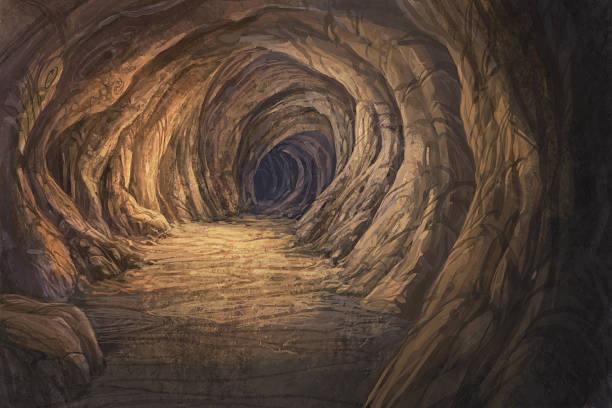

To The Cave
You decided that taking the carriage is the safest way to get to the cave. After sitting in the back of the wood wagon for the better part of the day, you finally reach the cave, just as the sun is beginning to set. The wagon driver gives you a torch out of the kindness of his heart, and you approach the cave. The driver leaves, and you are left alone. The cave looks cold, wet, and very dark. You're too far away from civilization to turn back now.
